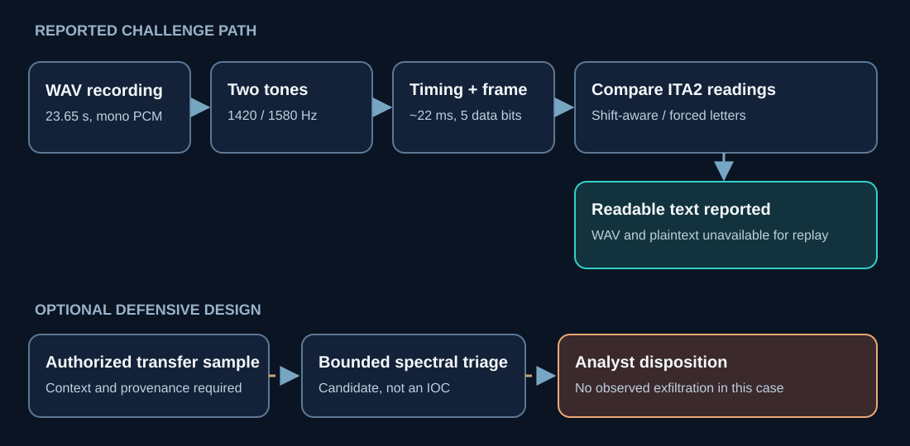

Abacus / Cyber Ops / CTF Writeups / Forensics / The Telegram in Two Tones
The Telegram in Two Tones
The useful clue was in the sound itself. Two alternating tones let me move from a generic steganography search to a framed teleprinter message. The remaining puzzle was how to read its shift state.
Summary
The challenge. Recover the message concealed in a fictional operative's audio telegram.
What I did. I checked the WAV, tested audio steganography ideas, measured tone and timing, demodulated the signal, and compared ITA2 decoding modes.
The result. The case record reports a readable plaintext from a forced-letter decode and marks the challenge solved. The plaintext and submission receipt are absent.
The limit. The challenge WAV, complete decoded message, and acceptance receipt were not supplied for independent replay. Linked tools were tested on synthetic audio and bitstreams.
Case details
| Field | Value |
|---|---|
| Category | Forensics / Signal Analysis |
| Difficulty | Medium |
| Tags | RTTY, AFSK, ITA2, Baudot, FSK, audio steganography, signal demodulation, covert communications |
| Status | Solved, as recorded; independent replay unavailable |
| Challenge evidence | A reported 23.65-second, 48 kHz, 16-bit mono PCM WAV with tones near 1420 and 1580 Hz. The WAV and plaintext are not included here. |
| Reusable proofs | The linked analysis scripts and fixtures are newly built, synthetic demonstrations. |
The production-oriented proofs of concept are in the GitHub artifacts folder. They do not replay the challenge recording.
1. Problem Statement and Threat Scenario
I was given a fictional signals-intelligence story about an amateur-radio enthusiast and a WAV file called telegram.wav. The goal was to recover the message carried by that recording. The case notes report a 23.65-second, 48 kHz, 16-bit mono PCM file. I can describe the solve from those notes, but the file and the recovered plaintext were not retained with this record.
That distinction matters for the operational sections below. A message in an audio file is the observed challenge mechanism. The fictional backstory does not establish an actual extremist network, a radio transmission, or exfiltration. I use the scenario to design possible content-review tools, with those ideas labeled as extrapolation.
2. Techniques, Tooling, and Actions Taken
Initial Triage
I started with file telegram.wav and Python's wave module. The recorded result was one mono PCM channel at 48 kHz, 1,135,200 frames, or 23.65 seconds. The title and radio context suggested a teleprinter mode, but neither those hints nor the file length could identify one by themselves.
Hypothesis 1: LSB Audio Steganography
My first pass pulled the least significant bit from 16-bit samples and tried seven- and eight-bit text reconstruction. It produced no readable message. That ruled out my simple LSB interpretation; it did not prove that every form of audio steganography was absent.
Hypothesis 2: Spectrogram / SSTV
I next looked at the signal over time. The case records two alternating, stable tones rather than an SSTV-like frequency sweep. That made a two-state modulation more promising than an image decoder.
Pivot: FSK Signal Identification
The reported tone centers were about 1420 Hz and 1580 Hz. Their midpoint is 1500 Hz and their separation is 160 Hz. I treated that as a binary FSK candidate. It is close to the common 170 Hz shift used in one amateur RTTY arrangement, but the numbers in this case do not equal 170 Hz. Without the WAV, I cannot recompute frequency uncertainty or distinguish generator settings from estimator error.
Baud Rate Identification
The recorded runs were approximately 22, 44, 66, 88, 110, and 132 milliseconds. About 22 ms per bit implies 45.45 symbols per second, a useful RTTY clue. It supports a framing hypothesis when combined with the two tones; that alone does not prove the protocol.
Demodulation
I bandpassed roughly 1300-1700 Hz, formed an analytic signal with the Hilbert transform, unwrapped its phase, and estimated instantaneous frequency. A median filter reduced short disturbances, and a 1500 Hz threshold separated candidate mark and space runs. This is one workable route for a clean two-tone recording. Short-time spectral energy is another; neither gives an exact symbol decision at every sample, especially near transitions or low-amplitude intervals.
RTTY Framing and ITA2 Decode
I tested a start bit, five data bits sent least-significant-bit first, and a mark stop interval. A standard ITA2 decoder tracks LTRS and FIGS shifts. The case notes report that mode-aware output became punctuation and digits after a FIGS code, while treating printable values as letters yielded a readable message. I would keep both outputs, the per-character mode trace, and the WAV before deciding whether that FIGS code was intentional, a framing error, or a damaged symbol. The missing recording prevents that check here.
3. Tooling and Scripts
These are the solve-time code sketches from the case record. They document the approach; I cannot rerun them without the WAV. The framing loop rounds tone runs to bit counts and skips startup samples, so a different file could require timing recovery and error handling. The linked bounded triage and ITA2 tools below are separately tested with synthetic inputs.
Full RTTY Demodulation and Decode Script
import wave
import numpy as np
from scipy.signal import hilbert, butter, filtfilt, medfilt
# --- Configuration ---
WAV_PATH = "telegram.wav"
BAUD = 45.45 # Standard amateur RTTY
MARK_FREQ = 1580 # Hz - logical 1
SPACE_FREQ = 1420 # Hz - logical 0
CENTER_FREQ = 1500 # Hz - decision threshold
# ITA2 / Murray Code - letters table (index = 5-bit value, LSB-first)
ITA2_LETTERS = [
None, 'E', '\n', 'A', ' ', 'S', 'I', 'U',
'\r', 'D', 'R', 'J', 'N', 'F', 'C', 'K',
'T', 'Z', 'L', 'W', 'H', 'Y', 'P', 'Q',
'O', 'B', 'G', None,'M', 'X', 'V', None # 31=LTRS, 27=FIGS handled separately
]
# ITA2 - figures table
ITA2_FIGURES = [
None, '3', '\n', '-', ' ', "'", '8', '7',
'\r', '+', '4', None, ',', None,':', '(',
'5', '"', ')', '2', '#', '6', '0', '1',
'9', '?', '&', None, '.', '/', None, None
]
def load_wav(path):
w = wave.open(path)
rate = w.getframerate()
frames = w.readframes(w.getnframes())
samples = np.frombuffer(frames, dtype=np.int16).astype(np.float32)
w.close()
return samples, rate
def demodulate_fsk(samples, rate, lo=1300, hi=1700, threshold=CENTER_FREQ):
"""Bandpass filter + Hilbert instantaneous frequency extraction."""
b, a = butter(4, [lo / (rate / 2), hi / (rate / 2)], btype='band')
filtered = filtfilt(b, a, samples)
analytic = hilbert(filtered)
inst_phase = np.unwrap(np.angle(analytic))
inst_freq = np.diff(inst_phase) / (2.0 * np.pi) * rate
inst_freq_smooth = medfilt(inst_freq, kernel_size=101)
return (inst_freq_smooth > threshold).astype(int)
def build_bitstream(bits_cont, baud, rate):
"""Convert continuous bit signal to symbol-rate bitstream."""
BIT_S = rate / baud # samples per bit
transitions = np.where(np.diff(bits_cont) != 0)[0]
run_starts = np.concatenate([[0], transitions + 1])
run_ends = np.concatenate([transitions + 1, [len(bits_cont)]])
run_vals = bits_cont[run_starts]
bits = []
for val, dur in zip(run_vals, run_ends - run_starts):
bits.extend([int(val)] * max(1, round(dur / BIT_S)))
return bits[2:] # drop startup transient
def decode_ita2_letters_only(bits):
"""
Decode ITA2 bitstream using letters table exclusively.
Ignores LTRS/FIGS shift state - appropriate when payload is known
to be entirely in letters-table values.
"""
text = ''
i = 0
n = len(bits)
while i < n - 7:
if bits[i] == 0: # start bit (space)
d = bits[i + 1:i + 6] # 5 data bits, LSB-first
stop = bits[i + 6] if i + 6 < n else 1
if stop == 1 and len(d) == 5: # valid stop bit (mark)
val = d[0] | (d[1] << 1) | (d[2] << 2) | (d[3] << 3) | (d[4] << 4)
if val not in (27, 31): # skip shift codes
c = ITA2_LETTERS[val]
if c and c not in ('\r', '\x00'):
text += c
i += 7
while i < n and bits[i] == 1: # resync to next start bit
i += 1
else:
i += 1
return text
def decode_ita2_full(bits):
"""
Decode ITA2 bitstream with full LTRS/FIGS shift tracking.
Returns decoded text respecting mode state.
"""
text = ''
mode = 'L'
i = 0
n = len(bits)
while i < n - 7:
if bits[i] == 0:
d = bits[i + 1:i + 6]
stop = bits[i + 6] if i + 6 < n else 1
if stop == 1 and len(d) == 5:
val = d[0] | (d[1] << 1) | (d[2] << 2) | (d[3] << 3) | (d[4] << 4)
if val == 31:
mode = 'L'
elif val == 27:
mode = 'F'
else:
c = ITA2_LETTERS[val] if mode == 'L' else ITA2_FIGURES[val]
if c and c not in ('\r', '\x00', '\n'):
text += c
i += 7
while i < n and bits[i] == 1:
i += 1
else:
i += 1
return text
# --- Main ---
samples, rate = load_wav(WAV_PATH)
bits_cont = demodulate_fsk(samples, rate)
bits = build_bitstream(bits_cont, BAUD, rate)
print("=== Letters-table decode ===")
print(decode_ita2_letters_only(bits))
print("\n=== Full mode-aware decode ===")
print(decode_ita2_full(bits))
Diagnostic: Per-Character Verbose Dump
def dump_characters(bits):
"""Print each decoded ITA2 character with its binary value and mode state."""
mode = 'L'
i = 0
n = len(bits)
print(f"{'IDX':>6} {'VAL':>4} {'BIN':>7} {'MODE'} {'L_CHAR':^8} {'F_CHAR':^8}")
print("-" * 52)
while i < n - 7:
if bits[i] == 0:
d = bits[i + 1:i + 6]
stop = bits[i + 6] if i + 6 < n else 1
if stop == 1 and len(d) == 5:
val = d[0] | (d[1] << 1) | (d[2] << 2) | (d[3] << 3) | (d[4] << 4)
cl = ITA2_LETTERS[val] or ''
cf = ITA2_FIGURES[val] or ''
if val == 31: cl = '<LTRS>'
if val == 27: cl = '<FIGS>'
print(f"{i:>6} {val:>4} {val:>07b} {mode} {repr(cl):^8} {repr(cf):^8}")
if val == 31: mode = 'L'
elif val == 27: mode = 'F'
i += 7
while i < n and bits[i] == 1:
i += 1
else:
i += 1
4. Concept Explanation
Binary Frequency Shift Keying (2-FSK)
Binary FSK carries 0 and 1 with different tones. In this recording, the lower tone was reported near 1420 Hz and the higher one near 1580 Hz. I mapped lower to space/start and higher to mark/stop as a decoding hypothesis. The difference is 160 Hz. ITU-R M.2200 describes a common 45.45-baud amateur RTTY arrangement with a 170 Hz shift; the mismatch deserves to be recorded, not silently rounded away.
International Telegraph Alphabet No. 2 (ITA2)
ITA2 uses five-bit character values, LTRS and FIGS shift states, and start/stop framing. Five data bits alone cannot carry letters, numbers, and punctuation in one table, so the state persists until another shift code arrives. This explains why one bad shift decision can make an otherwise aligned message look wrong. In the case record, forced letters are a diagnostic alternate reading, not proof that the sender meant to ignore FIGS.
Hilbert Transform for Instantaneous Frequency
For a filtered real-valued waveform, I can form an analytic signal, unwrap its phase, and differentiate phase to estimate instantaneous frequency. SciPy's Hilbert documentation shows this relationship. Estimates are most useful in stable tone interiors. Noise, amplitude nulls, filtering transients, and symbol transitions can disturb them, so I checked run lengths and framing rather than treating every sample as exact.
5. Exploit/Analysis Mechanics
Step 1: Signal Isolation
I used a fourth-order bandpass around 1300-1700 Hz to focus on the reported tone pair. Those limits are case-specific and would need remeasurement for another file.
Step 2: Instantaneous Frequency Extraction
Unwrapped analytic phase gave a frequency estimate; a 101-sample median filter at 48 kHz smooths about two milliseconds. This is shorter than the reported 22 ms symbol interval. It does not by itself repair a weak signal or prove the carrier frequencies.
Step 3: Symbol Recovery
I thresholded at 1500 Hz, grouped runs, and rounded their lengths against roughly 1056 samples per bit. Rounding made the clean run pattern usable, but it can compound clock drift or split/merge symbols around noise. A production decoder would estimate timing jointly with framing.
Step 4: RTTY Frame Extraction
I looked for a space start, five least-significant-bit-first data symbols, and a mark stop. The sketch resynchronizes after malformed frames. Without the original bitstream I cannot report a frame-error rate or prove the chosen alignment was unique.
Step 5: The Shift-Mode Trap
The mode-aware reading in the notes became mostly figures after one FIGS symbol; forced letters looked like prose. That was the solve pivot. I would also inspect the symbol before and after the shift, alternate start alignment, and both candidate tables. The record does not retain the plaintext or enough raw bits to determine why the two interpretations diverged.
6. Lessons Learned (Practitioner Perspective)
What the exercise validated
The useful move was to characterize the waveform before committing to a hiding method. Two tones and repeated 22 ms runs led me to an RTTY/ITA2 hypothesis. The second useful move was comparing mode-aware and forced-letter output while preserving the shift-code trace. Those are transferable analysis habits; they are not evidence that this challenge involved a real covert operation.
What the exercise surfaced as gaps or inefficiencies
I tried simple LSB recovery first and spent time considering SSTV. A quick spectrum or spectrogram earlier would have narrowed the search. More important, the case record did not preserve the WAV, plaintext, alignment trace, or submission receipt. That prevents a later analyst from checking the frequency estimate and FIGS interpretation.
Transferable principles
- Measure tone centers, separation, run lengths, and framing separately. Protocol identity comes from their agreement, not one magic number.
- Keep stateful decoding visible. A shifted table can make legible bits look like nonsense.
- Retain the raw artifact and the rejected interpretations. A readable decode should be tested against the original signal.
7. Extrapolation
Individual Practitioner Skill Development
I would practice this on known audio fixtures with deliberately altered shift, baud, noise, and clock drift. GNU Radio or another SDR workflow could extend that learning to RF captures, but this challenge only supplied a WAV in the written record. Packet radio, DTMF, and modem tones are adjacent skills, not outcomes I demonstrated here.
Security Operations (SOC, IR, Threat Hunting)
In an environment that permits audio uploads, a defender could ask whether outbound files contain repeated data-like tones. The spectral triage tool provides a bounded local candidate score. It needs transfer context, an authorized content sample, false-positive testing, and analyst review before it could support a hunt or alert. File extension, duration, and a pair of tones are not malicious indicators by themselves.
Intelligence Operations (SIGINT, IO/IW)
ITA2 framing and FSK can help classify an authorized interception, but a decoded audio file does not establish where it was transmitted, who sent it, or whether a call sign identified anyone. The fictional salutation is message content, not attribution. The format also does not authenticate a sender; any real attribution would require separate collection and corroboration.
8. Reusable Tools, Scripts, and Artifacts
The linked artifact README gives inputs, tests, and limits. The audio FSK triage script reads bounded mono PCM WAV files and checks for alternating energy near configured tones. The ITA2 decoder compares modes on already recovered bits. The synthetic tests cover a two-tone signal, single-tone and noise negatives, WAV parsing, and a shift-mode example. They do not decode the missing challenge WAV end to end.
FSK Signal Triage Checklist
1. Generate spectrogram (specgram, matplotlib or scipy)
- Flat noise -> many possible causes; investigate separately
- Discrete tone pairs -> FSK candidate
- Continuous frequency sweep -> possible SSTV, chirp, or FM; inspect timing
- Pulsed single tone -> Morse code
2. Measure tone frequencies (FFT, first 1s of signal)
- Record f_mark (higher) and f_space (lower)
- Calculate shift = f_mark - f_space
- Common shifts: 170 Hz (RTTY), 425 Hz (RTTY wide), 1000 Hz (Bell 202)
3. Measure symbol duration (run-length analysis)
- Identify smallest run duration = 1 bit period
- Calculate baud = 1000 / bit_period_ms
- Common rates: 45.45 (RTTY), 50 (RTTY EU), 300/1200 (Bell 103/202 modem)
4. Match (shift, baud) to protocol table:
| Shift | Baud | Protocol |
|--------|-------|-----------------|
| 170 Hz | 45.45 | Amateur RTTY |
| 170 Hz | 50 | Commercial RTTY |
| 1000 Hz | 1200 | Bell 202 / AFSK |
| 200 Hz | 300 | HF modem |
5. Demodulate with Hilbert instantaneous frequency
6. Extract bitstream at symbol rate
7. Identify framing (start/stop bits, sync words)
8. Identify character encoding (ITA2, ASCII, EBCDIC, custom)
9. Handle mode/shift state explicitly
Reusable FSK Demodulator Module
This solve-time module is an untested sketch retained for reproducibility. It assumes a clean signal, stable symbol timing, a valid bandpass, and already-chosen tone parameters. The linked triage script is narrower but has synthetic tests.
# fsk_demod.py - drop-in FSK demodulation primitive
# Usage: bits = fsk_demod(samples, rate, baud=45.45, mark=1580, space=1420)
import numpy as np
from scipy.signal import hilbert, butter, filtfilt, medfilt
def fsk_demod(samples, rate, baud=45.45, mark=1580, space=1420, filter_margin=200, median_kernel=101):
"""
Demodulate a 2-FSK audio signal using Hilbert instantaneous frequency.
Parameters
----------
samples : np.ndarray (float32) Raw audio samples
rate : int Sample rate in Hz
baud : float Symbol rate
mark : int Mark frequency (logical 1) in Hz
space : int Space frequency (logical 0) in Hz
filter_margin : int Bandpass filter half-width beyond signal edges
median_kernel : int Smoothing kernel length (odd integer, in samples)
Returns
-------
bits : list[int] Recovered bitstream at symbol rate
"""
lo = min(mark, space) - filter_margin
hi = max(mark, space) + filter_margin
threshold = (mark + space) / 2.0
# Bandpass filter
b, a = butter(4, [lo / (rate / 2), hi / (rate / 2)], btype='band')
filtered = filtfilt(b, a, samples)
# Instantaneous frequency via Hilbert transform
analytic = hilbert(filtered)
inst_phase = np.unwrap(np.angle(analytic))
inst_freq = np.diff(inst_phase) / (2.0 * np.pi) * rate
inst_freq_smooth = medfilt(inst_freq, kernel_size=median_kernel)
bits_cont = (inst_freq_smooth > threshold).astype(int)
# Run-length to symbol-rate bitstream
BIT_S = rate / baud
transitions = np.where(np.diff(bits_cont) != 0)[0]
run_starts = np.concatenate([[0], transitions + 1])
run_ends = np.concatenate([transitions + 1, [len(bits_cont)]])
run_vals = bits_cont[run_starts]
bits = []
for val, dur in zip(run_vals, run_ends - run_starts):
bits.extend([int(val)] * max(1, round(dur / BIT_S)))
return bits
RTTY ITA2 Decoder Module
The solve-time decoder sketch assumes reliable framed bits. For a small tested comparison of shift tracking and forced letters, use the linked ITA2 decoder.
# ita2_decode.py - ITA2/Baudot decode with configurable mode handling
ITA2_LETTERS = [
None,'E','\n','A',' ','S','I','U','\r','D','R','J','N','F','C','K',
'T','Z','L','W','H','Y','P','Q','O','B','G',None,'M','X','V',None
]
ITA2_FIGURES = [
None,'3','\n','-',' ',"'",'8','7','\r','+','4',None,',',None,':','(',
'5','"',')','2','#','6','0','1','9','?','&',None,'.','/',None,None
]
LTRS = 31
FIGS = 27
def decode_rtty(bits, mode='track', start_mode='L'):
"""
Decode an ITA2 bitstream from a standard RTTY framed signal.
Parameters
----------
bits : list[int] Symbol-rate bitstream (output of fsk_demod)
mode : str 'track' - respect LTRS/FIGS shifts (standard)
'letters' - force letters table throughout
'figures' - force figures table throughout
start_mode : str Initial mode if mode='track' ('L' or 'F')
Returns
-------
text : str Decoded plaintext
"""
text = ''
current_mode = start_mode
i = 0
n = len(bits)
while i < n - 7:
if bits[i] == 0: # start bit
d = bits[i + 1:i + 6]
stop = bits[i + 6] if i + 6 < n else 1
if stop == 1 and len(d) == 5:
val = d[0]|(d[1]<<1)|(d[2]<<2)|(d[3]<<3)|(d[4]<<4)
if mode == 'track':
if val == LTRS:
current_mode = 'L'
elif val == FIGS:
current_mode = 'F'
else:
table = ITA2_LETTERS if current_mode == 'L' else ITA2_FIGURES
c = table[val]
if c and c not in ('\r', '\x00'): text += c
elif mode == 'letters':
if val not in (LTRS, FIGS):
c = ITA2_LETTERS[val]
if c and c not in ('\r', '\x00'): text += c
elif mode == 'figures':
if val not in (LTRS, FIGS):
c = ITA2_FIGURES[val]
if c and c not in ('\r', '\x00'): text += c
i += 7
while i < n and bits[i] == 1:
i += 1
else:
i += 1
return text
9. Framework Mapping
I use the frameworks here to separate what the WAV exercise demonstrates from what a defender might investigate in a real transfer. The challenge shows signal encoding and message recovery. It does not show an adversary, a C2 link, or data leaving a protected network.
MITRE ATT&CK
| Mapping considered | My disposition | Evidence needed in a real case |
|---|---|---|
| T1001, Data Obfuscation | Conditional analogy. AFSK can carry content in an unexpected form, but encoding alone is not proof of adversarial obfuscation. | Actor-controlled communication and concealment purpose |
| T1001.001, Junk Data | Not supported. ITA2 shift codes are protocol symbols, not automatically junk inserted to hide traffic. | Deliberate padding or irrelevant bytes for concealment |
| T1048, Exfiltration Over Alternative Protocol and T1048.003 | Not observed. There is only a local WAV in the exercise. | Evidence of an outbound transfer using a non-C2 protocol and sensitive content |
| T1027, Obfuscated Files or Information | Conditional analogy if an actor used the audio encoding to conceal information. | File purpose and adversary behavior |
| T1205, Traffic Signaling | Not supported by message-bearing audio alone. | A signaling pattern used to trigger or control behavior |
MITRE D3FEND
The practical defensive analogue is D3-FCOA, File Content Analysis: inspect an allowed audio file's content rather than relying on its extension. Network traffic analysis could identify where a file moved, but it cannot tell whether a WAV contains 2-FSK unless a sensor extracts or inspects content. My initial D3-FCA label belongs to File Creation Analysis, so I do not use it for this content check. I did not run a D3FEND control in a production environment.
CAPEC
I do not map CAPEC-137 Parameter Injection to this case; no parameter was injected. CAPEC-636 concerns hiding malicious data or code in file features and metadata. An audible two-tone message is not that pattern as recorded. These were useful mapping checks because they exposed where a generic "hidden in a file" label would overstate the evidence.
No OWASP web attack or STRIDE design model is supported by this standalone audio challenge.
10. Threat Intel and Standards Integration
STIX 2.1 Sample Objects
My initial notes proposed STIX 2.1 attack-pattern, indicator, and course-of-action objects with redacted UUIDs and a redacted hash. Those are sketches, not exchangeable intelligence. I have no real hash to publish, no validated malicious activity, and no observed infrastructure. An indicator for a WAV file would also confuse a common file type with an IOC.
The illustrative STIX behavior bundle contains only a scenario-derived attack-pattern description and a course of action for authorized content review. It is explicitly marked as training context, contains no indicator or actor attribution, and was checked for JSON syntax and basic STIX 2.1 fields. I did not validate it with a full STIX schema or exchange it through TAXII. OASIS STIX 2.1 defines the object model.
My initial notes also mentioned STIG and CIS. I found no direct host STIG finding in the WAV. CIS Control 13's monitoring theme can inform an audio-egress review if that environment has such a path; it does not mandate a universal spectral detector. An actual assessment would need the applicable product baseline and evidence of configuration.
11. Controls Mapping and Mitigation Realization
11a. Standards Mapping
| Control reference | Bounded application |
|---|---|
| NIST SP 800-53 SI-3 | Malicious-code protection applies only if the audio is part of a malware problem. No malicious code was found here. |
| NIST SP 800-53 SI-4 | A possible monitoring design for authorized audio transfers, if content is available for inspection. |
| NIST SP 800-53 SC-7 | Boundary policy could route or restrict certain transfers, subject to business requirements. |
| NIST SP 800-53 AU-12 | Record transfer metadata for later review; it does not create spectral evidence by itself. |
| CIS Controls 13.3 / 13.8 | Network detection and prevention may support the transfer-context side of this design. Neither safeguard is a WAV decoder. |
These are design touchpoints, not a control implementation or compliance result.
11b. Mitigation Realization
For a team that already inspects outbound files, I would build two stages. First, collect the file through an authorized DLP or gateway workflow with size limits and consent. Then run bounded audio analysis for a persistent dual-tone pattern. The local triage script implements the second stage on mono PCM WAV files and reports a candidate with diagnostic scores. It does not decide whether the file is malicious or whether data was exfiltrated.
My first-two-seconds FFT sketch is preserved below as the initial idea. A single whole-window spectrum can be dominated by one segment or miss time ordering. The linked script uses multiple short windows and asks whether both tones actually alternate. Its thresholds were tested on synthetic fixtures only.
# Illustrative first-pass idea, not a production DLP hook.
def flag_fsk_audio(wav_bytes, mark_freq=1580, space_freq=1420):
import io, wave, numpy as np
with wave.open(io.BytesIO(wav_bytes)) as wav:
rate = wav.getframerate()
samples = np.frombuffer(wav.readframes(wav.getnframes()), dtype="<i2")
window = samples[:rate * 2]
spectrum = abs(np.fft.rfft(window))
frequencies = np.fft.rfftfreq(len(window), 1 / rate)
def energy(center):
return spectrum[abs(frequencies - center) <= 30].sum()
return energy(mark_freq), energy(space_freq) # inspect time variation separately
My Palo Alto policy sketch was conceptual, not deployable PAN-OS syntax. I would translate it into an actual environment's egress and DLP policy, then validate allowed business audio, false positives, and the availability of decrypted content. My Splunk search is similarly an audio-transfer intake query, not an FSK detector. Its fields (mime_type, bytes_out, uri_path, and host) require a defined proxy schema and enrichment; encrypted traffic may expose none of the file bytes. A representative starting query is:
index=proxy_logs mime_type="audio/*"
| stats count sum(bytes_out) as bytes_out by src_ip dest_host mime_type
| where bytes_out > 50000
That query only lists audio transfers. An analyst would need an approved content sample and the spectral result before making a covert-channel finding.
12. Indicators, Artifacts, and Detection Engineering
IOCs (Sanitized/Illustrative)
There is no real IOC in the supplied record. The case measurements are a mono PCM WAV, 48 kHz, 23.65 seconds, reported tones near 1420 and 1580 Hz, and about 45.45 symbols per second. The REDACTED_HASH value in the case notes is a placeholder. Its 10-120 second duration range and 8-48 kHz rate range are broad candidate filters, not indicators of malicious activity. A normal .wav extension or RIFF header is even broader.
YARA Rule
My initial notes offered a YARA rule matching a RIFF/WAVE header, a narrow PCM fmt sequence, and a file-size range. That can only select some WAV files for later review; YARA does not perform spectral analysis. I would name and deploy such a rule as a file-type intake filter, not AFSK_RTTY_WAV_Covert_Channel. A simplified conceptual form is:
rule WAV_PCM_Intake_Only
{
meta:
description = "Broad WAV/PCM triage; no FSK or threat determination"
strings:
$wave = { 52 49 46 46 ?? ?? ?? ?? 57 41 56 45 }
$fmt_pcm_mono = { 66 6D 74 20 10 00 00 00 01 00 01 00 }
condition:
$wave at 0 and $fmt_pcm_mono and filesize > 10KB and filesize < 10MB
}
The fmt sequence assumes one common chunk layout and misses valid alternatives. I did not run a YARA engine or measure coverage. The meaningful content check is the linked spectral triage script, followed by framing and interpretation review.
Sigma Rule
My initial Sigma sketch selected outbound .wav POSTs using proxy fields and excluded an example host. That is a plausible transfer queue, but it cannot detect FSK or establish exfiltration. Field names, HTTP method visibility, multipart uploads, cloud sync clients, and allowed audio workflows vary by environment. I would define a normalized gateway event before shipping a rule:
event_type: outbound_file_transfer
source_user, source_host, destination_host, method, file_name,
mime_type, file_size, extracted_content_available, transfer_time
Selection would be an outbound audio file with content available for inspection, followed by the spectral result and human review. I did not publish a placeholder-ID Sigma as a deployable rule or claim pySigma/backend validation. False positives include media production, calls, accessibility recordings, and routine collaboration.
The practical detection chain is transfer context -> bounded file triage -> waveform review -> timing and ITA2 decode -> analyst disposition. A dual-tone score is a lead, not proof of hostile intent. The tests cover a synthetic alternating signal, single tone, seeded noise, a PCM reader, and a shift-mode example. They do not establish performance on the missing challenge file or a production file set.
13. Visual Artifact
The short flow at the top shows the solve sequence. This standalone SVG shows where the defensive review would attach without inventing a transmission or exfiltration stage.


The earlier kill-chain idea would have implied exfiltration. The SVG instead ends the challenge path at the reported message and places authorized transfer review on a separate, conditional track.
14. References
- ITU-R Report M.2200 describes a 45.45-baud, 170 Hz amateur RTTY arrangement. The separately cited M.476-5 is titled for maritime direct-printing telegraph equipment.
- ITA2 / International Telegraph Alphabet No. 2. The five-bit LTRS/FIGS tables and start/stop framing are the decoding model used here.
- MITRE ATT&CK T1001, a conditional adversary-behavior analogy.
- MITRE ATT&CK T1048, withheld as a case finding because no exfiltration was observed.
- MITRE D3FEND File Content Analysis, the bounded defensive analogue.
- MITRE CAPEC-636, reviewed and not mapped directly to the audible tone content.
- NIST SP 800-53 Rev. 5, control catalog used only as a design reference.
- Marple, Digital Spectral Analysis (1987), cited in the case for frequency-estimation background; no claim from a specific chapter is needed here.
- SciPy
hilbertdocumentation, analytic signal and instantaneous-frequency example. - CIS Controls v8, monitoring and defense context.
- OASIS STIX 2.1, structure for the linked illustrative bundle.